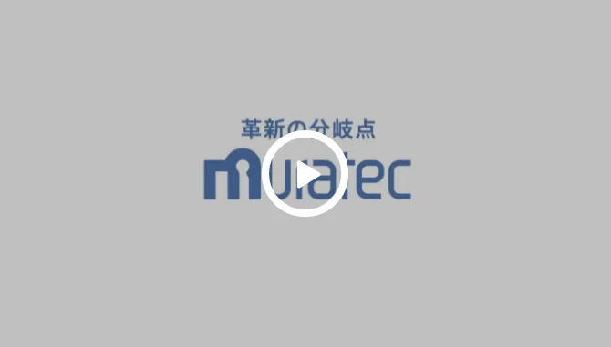
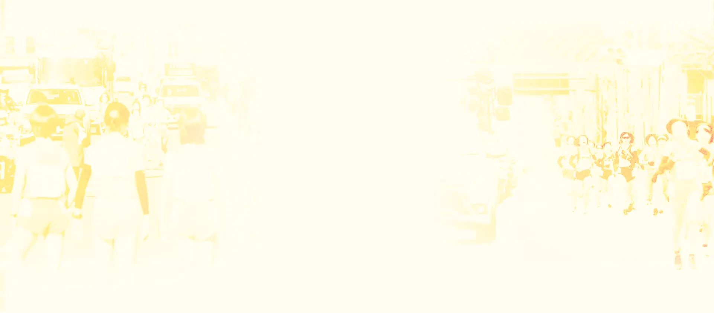

社会や時代をよりよい方向に変える「革新の分岐点」でありたい。
それが私たちムラテックの願いです。
多様な事業すべてに共通するのは、
自動化や省力化の技術を通じて、お客さまの課題に真摯に向き合う姿勢。
そこから見通せる新たな視界と可能性をもとに、現場を、仕事の質を、
業界の基準を変える革新的な仕組みやシステムを次々と創造し、
豊かな社会を実現することをめざします。


「革新の分岐点」スペシャル対談
村田機械は1989年（平成元年）から皇后盃 都道府県対抗女子駅伝競走大会（全国女子駅伝）
（主催 日本陸上競技連盟、共催 京都新聞、NHK）に協賛しています。
全国女子駅伝は、都道府県代表選手が郷土の期待を
背負ってタスキをつなぎ走り抜く、
地元・京都の市民はもちろん、全国の駅伝ファンが熱い声援を送る、
冬の風物詩とも言える行事です。
同時に、オリンピアンを含む数多くの中長距離ランナーを育ててきた
日本女子陸上界のビッグイベントでもあります。
参加選手のみならず、イベントをサポートするスタッフなど、
大会に関わる数多くの人にとって、これまでに通過してきた紆余曲折＝分岐点があり、
この大会を機に新たな物語が始まる、
そんな熱き舞台を、村田機械は応援しています。
SPECIAL CONTENTS

CORPORATE INFORMATION
| 会社名 | 村田機械株式会社 |
|---|---|
| 創業 | 昭和10年（1935年）7月 |
| 本社所在地 | 〒612-8418 京都市伏見区竹田向代町136 TEL：075-672-8111 FAX：075-672-8691 |
| 代表者 | 代表取締役社長 村田大介 |
| 事業内容 | ロジスティクスシステム・FAシステム・クリーンFA・工作機械・シートメタル加工機・繊維機械・情報機器 などの製造販売 |
| 資本金 | 9億円 |
| 売上高 | 【連結】5,260億円【単独】3,923億円 （2025年3月期） |
| 従業員数 | 【グループ】 8,659名【単独】4,133名 （2025年3月現在） |